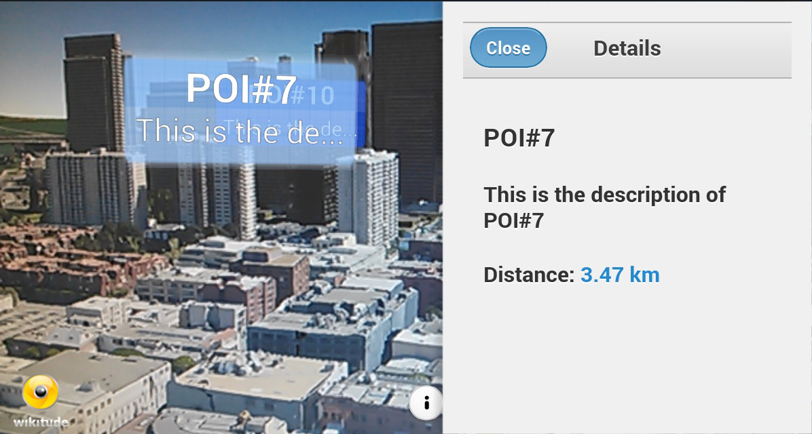
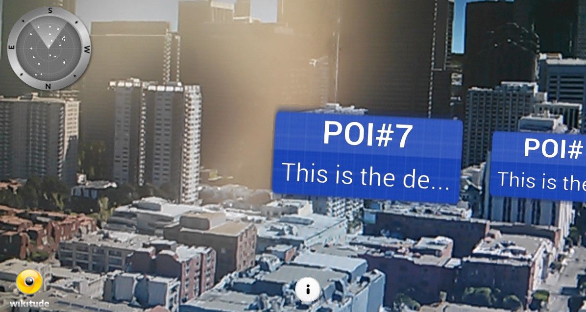
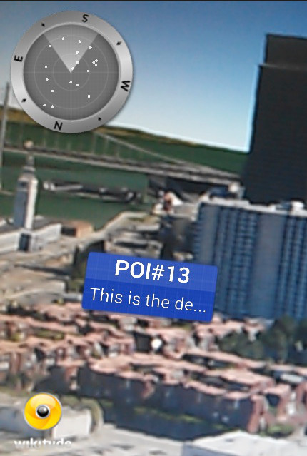
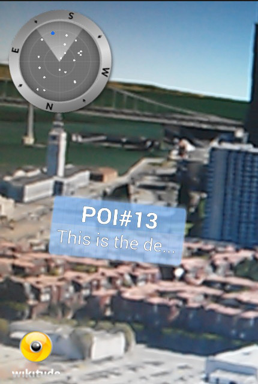
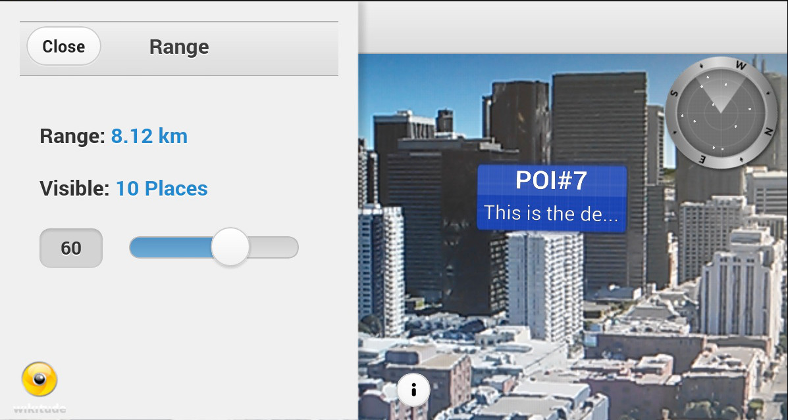
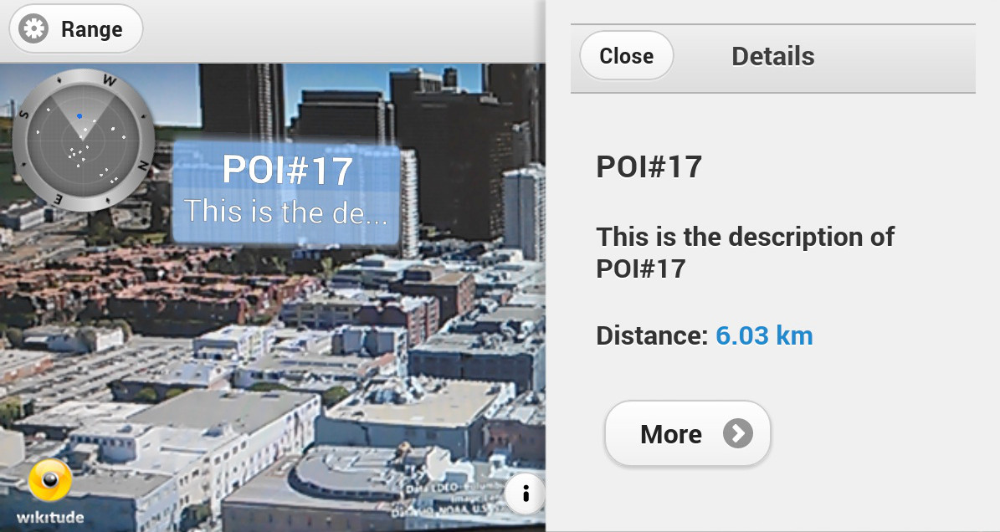
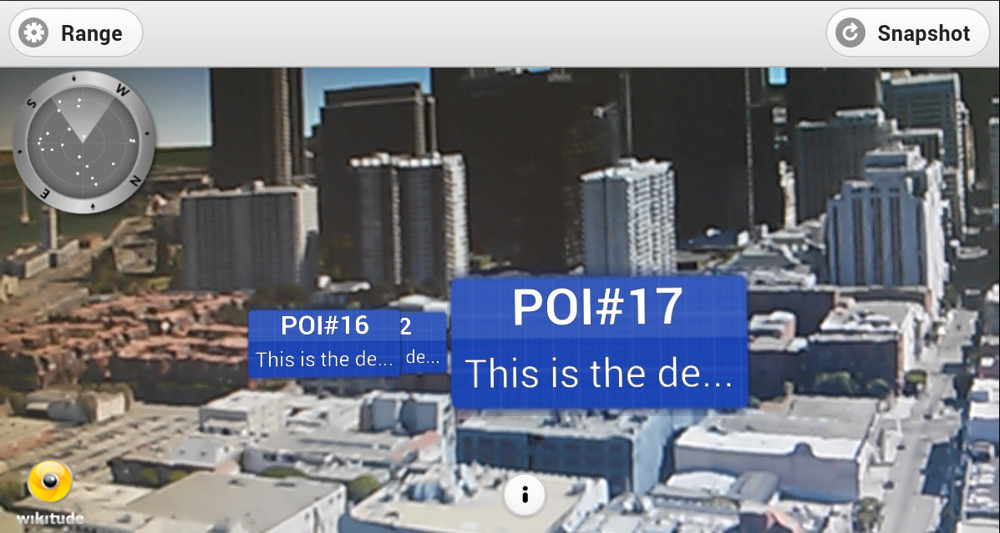

Browsing POIs
Displaying numerous POIs in the camera is a challenge. How many POIs should be offered? How to deal with POIs in same direction? What is the maximum range to show POIs and how to display a long description? The following example cover frequently asked questions related to the POI browser use case and consists of five parts plus a bonus section
- Presenting Details
- POI and AR Radar
- Limiting Visible POIs
- Reloading POI Data
- Native Detail Screen
- Capture Screen Bonus
Presenting Details (1/6)
POIs usually have a name and sometimes a quite long description. Depending on your content type you may e.g. display a marker with its name and cropped description but allow the user to get more information after selecting it.

jQuery Mobile is an easy way to create appealing user interfaces for mobile devices. It takes the "write less, do more" mantra to the next level: Instead of writing unique apps for each mobile device or OS, the jQuery mobile framework allows you to design a single highly-branded web site or application that will work on all popular smartphones, tablets, and desktop platforms (quote from their website). We recommend to use jQuery mobile for the implementation of the UI in the augmented reality view. It is well documented and can even be bundled into the app or hosted on your own web server.
In this sample a POI detail panel appears when pressing a cam-marker (the blue box with title & description), compare index.html in the sample's directory.
<!-- panel containing POI detail information -->
<div data-role="panel" id="panel-poidetail" data-position="right" data-display="overlay" style="background-color:#F0F0F0;" data-theme="c">
<!-- header with "close" button -->
<div data-role="header" data-theme="c">
<h1>Details</h1>
<a href="#header" data-rel="close">Close</a>
</div>
<!-- content of POI detail page, you may also add thumbnails etc. here if you like -->
<div data-role="content">
<!-- title -->
<h3 id="poi-detail-title"></h3>
<!-- description -->
<h4 id="poi-detail-description"></h4>
<!-- distance -->
<h4>Distance: <a id="poi-detail-distance"></a></h4>
</div>When selecting a marker the content shown in the POI detail div is updated. At the same time the panel is animated from right to left.
To deselect the marker the panelbeforeclose event is used, compare presentingPoiDetails.js
onMarkerSelected: function onMarkerSelectedFn(marker) {
World.currentMarker = marker;
// update panel values
$("#poi-detail-title").html(marker.poiData.title);
$("#poi-detail-description").html(marker.poiData.description);
var distanceToUserValue = (marker.distanceToUser > 999) ? ((marker.distanceToUser / 1000).toFixed(2) + " km") : (Math.round(marker.distanceToUser) + " m");
$("#poi-detail-distance").html(distanceToUserValue);
// show panel
$("#panel-poidetail").panel("open", 123);
$("#panel-poidetail").on("panelbeforeclose", function(event, ui) {
World.currentMarker.setDeselected(World.currentMarker);
});POI and AR Radar (2/6)
It is recommended to give the user a hint where places are located in the user's vicinity. The easiest way to provide orientation assistance is an AR.Radar element. Every AR.GeoObject (e.g. a cam marker) can have a representation in the radar element, usually indicated by a small dot.

The representation of an AR.GeoObject in the radar is defined in its drawables set (second argument of AR.GeoObject constructor). Once drawables.radar is set the object is also shown on the radar e.g. as an AR.Circle, compare marker.js:
this.radarCircle = new AR.Circle(0.03, {
horizontalAnchor: AR.CONST.HORIZONTAL_ANCHOR.CENTER,
opacity: 0.8,
style: {
fillColor: "#ffffff"
}
});
this.radardrawables = [];
this.radardrawables.push(this.radarCircle);Additionally create circles with a different color for the selected state, compare marker.js:
this.radarCircleSelected = new AR.Circle(0.05, {
horizontalAnchor: AR.CONST.HORIZONTAL_ANCHOR.CENTER,
opacity: 0.8,
style: {
fillColor: "#0066ff"
}
});
this.radardrawablesSelected = [];
this.radardrawablesSelected.push(this.radarCircleSelected);
this.markerObject = new AR.GeoObject(markerLocation, {
drawables: {
cam: [ this.markerDrawable_idle,
this.markerDrawable_selected,
this.titleLabel,
this.descriptionLabel ],
indicator: this.directionIndicatorDrawable,
radar: this.radardrawables
}
});To highlight a selected marker in the radar update the drawables in the function
 
Marker.prototype.setSelected and Marker.prototype.setDeselected, compare marker.js:
marker.markerObject.drawables.radar = marker.radardrawablesSelected;
[...]
marker.markerObject.drawables.radar = marker.radardrawables;The position of the radar and its size are defined using a DOM element. In our example a div element with id radarContainer, compare index.html:
<div class="radarContainer_left" id="radarContainer"></div>The size and position of the radar is defined in a css class, see poi-radar.css:
/* position of POI-radar*/
.radarContainer_left {
position:absolute;
top:0px;
left:0px;
width:100px;
height:100px;
}We advise you to use an absolute position for the element which will be referred to the radar container. Keep in mind: In case the DOM element is updated on the fly via jQuery or responsive design use AR.radar.notifyUpdateRadarPosition(); to force radar position/size updates, otherwise the very first position/size will be used.
The radar itself can be customized and should be implemented as a separate component in your JavaScript code, compare radar.js.
var PoiRadar = {
hide: function hideFn() {
AR.radar.enabled = false;
},
show: function initFn() {
// the div defined in the index.htm
AR.radar.container = document.getElementById("radarContainer");
// set the back-ground image for the radar
AR.radar.background = new AR.ImageResource("assets/radar_bg.png");
// set the north-indicator image for the radar
// (not necessary if you don't want to display a north-indicator)
AR.radar.northIndicator.image = new AR.ImageResource("assets/radar_north.png");
// center of north indicator and radar-points in the radar asset,
// usually center of radar is in the exact middle of the background,
// meaning 50% X and 50% Y axis --> 0.5 for centerX/centerY
AR.radar.centerX = 0.5;
AR.radar.centerY = 0.5;
AR.radar.radius = 0.3;
AR.radar.northIndicator.radius = 0.0;
AR.radar.enabled = true;
},
updatePosition: function updatePositionFn() {
if (AR.radar.enabled) {
AR.radar.notifyUpdateRadarPosition();
}
},
// you may define some custom action when user pressed radar,
// e.g. display distance, custom filtering etc.
clickedRadar: function clickedRadarFn() {
alert("Radar Clicked");
},
setMaxDistance: function setMaxDistanceFn(maxDistanceMeters) {
AR.radar.maxDistance = maxDistanceMeters;
}
};Call the PoiRadar.show function to activate the radar component. You may even define a click action if requested, compare addingRadar.js:
// show radar & set click-listener
PoiRadar.show();
$('#radarContainer').unbind('click');
$("#radarContainer").click(PoiRadar.clickedRadar);Limiting Visible POIs (3/6)
Users are sometimes only interested to see POIs within a certain range. This sample provides an additional button in the titlebar button to allow users to change the range of interest.

First of all add a button in the titlebar
index.html
<!-- header of UI holding feature buttons -->
<div id ="header-status" data-role="header" data-position="fixed" data-theme="c">
<a href="javascript: World.showRange();" data-icon="gear" data-inline="true" data-mini="true">Range</a>
<h1></h1>
</div>Afterwards define the panel layout for distance range. In this case the current range in meters and the number of visible POIs is shown in the panel.
index.html
<!-- range panel -->
<div data-role="panel" id="panel-distance" data-position="left" data-display="overlay" style="background-color:#F0F0F0;" data-theme="c">
<!-- header with close button -->
<div data-role="header" data-theme="c">
<h1>Range</h1>
<a href="#header" data-rel="close">Close</a>
</div>
<!-- distance information, calculated/updated in code -->
<div data-role="content">
<!-- Range in m/km-->
<h4> Range: <a id="panel-distance-value"></a></h4>
<!-- Amount of visible places -->
<h4> Visible: <a id="panel-distance-places"></a></h4>
<!-- default slider -->
<input id="panel-distance-range" type="range" data-highlight="true" name="rangeSlider" min="0" max="100" value="100" data-show-value="false" step="5" data-popup-enabled="false">
</div>
</div>The function World.updateRangeValues is executed every time a user changes the slider value.
Besides proper calculation of the maximum distance and total number of visible places AR.context.scene.cullingDistance and PoiRadar.setMaxDistance are executed to update rendering of markers and drawables in the radar, compare limitingRange.js
// updates values show in "range panel"
updateRangeValues: function updateRangeValuesFn() {
// get current slider value (0..100);
var slider_value = $("#panel-distance-range").val();
// max range relative to the maximum distance of all visible places
var maxRangeMeters = Math.round(World.getMaxDistance() * (slider_value / 100));
// range in meters including metric m/km
var maxRangeValue = (maxRangeMeters > 999) ? ((maxRangeMeters / 1000).toFixed(2) + " km") : (Math.round(maxRangeMeters) + " m");
// number of places within max-range
var placesInRange = World.getNumberOfVisiblePlacesInRange(maxRangeMeters);
// update UI labels accordingly
$("#panel-distance-value").html(maxRangeValue);
$("#panel-distance-places").html((placesInRange != 1) ? (placesInRange + " Places") : (placesInRange + " Place"));
// update culling distance, so only places within given range are rendered
AR.context.scene.cullingDistance = Math.max(maxRangeMeters, 1);
// update radar's maxDistance so radius of radar is updated too
PoiRadar.setMaxDistance(Math.max(maxRangeMeters, 1));
},
// returns number of places with same or lower distance than given range
getNumberOfVisiblePlacesInRange: function getNumberOfVisiblePlacesInRangeFn(maxRangeMeters) {
// sort markers by distance
World.markerList.sort(World.sortByDistanceSorting);
// loop through list and stop once a placemark is out of range ( -> very basic implementation )
for (var i = 0; i < World.markerList.length; i++) {
if (World.markerList[i].distanceToUser > maxRangeMeters) {
return i;
}
};
// in case no placemark is out of range -> all are visible
return World.markerList.length;
},The position of the radar component can be updated using another CSS style (using e.g. removeClass and addClass of jQuery) and calling PoiRadar.updatePosition();. In this sample the radar element moves to the right when the distance panel. Compare limitingRange.js
handlePanelMovements: function handlePanelMovementsFn() {
$("#panel-distance").on("panelclose", function(event, ui) {
$("#radarContainer").addClass("radarContainer_left");
$("#radarContainer").removeClass("radarContainer_right");
PoiRadar.updatePosition();
});
$("#panel-distance").on("panelopen", function(event, ui) {
$("#radarContainer").removeClass("radarContainer_left");
$("#radarContainer").addClass("radarContainer_right");
PoiRadar.updatePosition();
});
},The World.showRange function is executed when a user presses the Range button.
// display range slider
showRange: function showRangeFn() {
if (World.markerList.length > 0) {
// update labels on every range movement
$('#panel-distance-range').change(function() {
World.updateRangeValues();
});
World.updateRangeValues();
World.handlePanelMovements();
// open panel
$("#panel-distance").trigger("updatelayout");
$("#panel-distance").panel("open", 1234);
} else {
// no places are visible, because the are not loaded yet
World.updateStatusMessage('No places available yet', true);
}
}Reloading POI Data (4/6)
You may need to reload POI information because of user movements or manually for various reasons. In this example POIs are reloaded when user presses the refresh button. The button is defined in index.html and calls World.reloadPlaces() on click.
<a href="javascript: World.reloadPlaces()" data-icon="refresh" >Reload</a>The implementation of World.reloadPlaces() is part of the ARchitect World (reloadingPois.js) and executes World.requestDataFromServer which retrieves data according to the user's current location from a web service.
Sidenote: In certain circumstances your web service may not be available or other connection issues can occur. To notify the user about connection problems a status message is updated, In your own implementation you may e.g. use an info popup or similar.
var World = {
[…]
// reload places from content source
reloadPlaces: function reloadPlacesFn() {
if (!World.isRequestingData) {
if (World.userLocation) {
World.requestDataFromServer(World.userLocation.latitude,
World.userLocation.longitude);
} else {
World.updateStatusMessage('Unknown user-location.', true);
}
} else {
World.updateStatusMessage('Already requesting places...', true);
}
}
[…]
}Displaying Native Detail Screen (5/6)
It may make sense to display POI details in your native style. In this sample a very simple native screen opens when user presses the 'More' button in HTML. This demoes the interaction between JavaScript and native code.

A More button is added to index.html which calls the function World.onPoiDetailMoreButtonClicked.
<!-- more button-->
<a href="javascript: World.onPoiDetailMoreButtonClicked();"
data-role="button" data-icon="arrow-r" data-iconpos="right" data-inline="true">
More
</a>World.onPoiDetailMoreButtonClicked is implemented in nativePoiDetail.js and executes document.location = architectsdk://.... The urlListener of the native project intercepts this call and parses the arguments. This is the only way to pass information from JavaScript to your native code. Ensure to properly encode and decode arguments.
var World = {
[…]
// user clicked "More" button in POI-detail panel -> fire event to open native screen
onPoiDetailMoreButtonClicked: function onPoiDetailMoreButtonClickedFn() {
var currentMarker = World.currentMarker;
var architectSdkUrl = "architectsdk://markerselected?id=" +
encodeURIComponent(currentMarker.poiData.id) +
"&title=" +
encodeURIComponent(currentMarker.poiData.title) +
"&description=" +
encodeURIComponent(currentMarker.poiData.description);
document.location = architectSdkUrl;
}
[…]
}Please have a look at the this section which describes the custom url scheme native part.
Capture Screen Bonus (6/6)
This sample shows you how to use the function captureScreen to share a snapshot with your friends. Concept of interaction between JavaScript and native code is same as in the POI Detail page sample but the urlListener now handles picture sharing instead. The "Snapshot"-button is on top right in the title bar. Once clicked the current screen is captured and user is prompted to share it.
<!-- header of UI holding feature buttons -->
<div id ="header-status" data-role="header" data-position="fixed" data-theme="c">
<a href="javascript: World.showRange();" data-icon="gear" data-inline="true" data-mini="true">Range</a>
<a href="javascript: World.captureScreen()" data-icon="refresh" >Snapshot</a>
<h1></h1>
</div>Handling of picture sharing is done in native code.
// tell native (urlListener) that user pressed 'Snapshot' button
captureScreen: function captureScreenFn() {
document.location = "architectsdk://button?action=captureScreen";
},## Browsing POIs Android
Displaying Native Detail Screen (5/6)
The ArchitectUrlListener interface allows you to exchange information between the JavaScript and the native code. It needs to be implemented whenever you want to communicate from JavaScript wicht the native code.
The method urlWasInvoked(String uriString) is called whenever the document.location in the Javascript file is the to the scheme architectsdk:// with any additional information encoded as URI components.
The parameter uriString represents the information as a string and can be parsed e.g. with Uri invokedUri = Uri.parse(uriString);
Sample usage:
// fetch e.g. document.location = "architectsdk://markerselected?id=1";
public boolean urlWasInvoked(String uriString) {
Uri invokedUri = Uri.parse(uriString);
if ("markerselected".equalsIgnoreCase(invokedUri.getHost())) {
final Intent poiDetailIntent = new Intent(SampleCamHandlePoiDetailActivity.this, SamplePoiDetailActivity.class);
poiDetailIntent.putExtra(SamplePoiDetailActivity.EXTRAS_KEY_POI_ID, String.valueOf(invokedUri.getQueryParameter("id")) );
poiDetailIntent.putExtra(SamplePoiDetailActivity.EXTRAS_KEY_POI_TITILE, String.valueOf(invokedUri.getQueryParameter("title")) );
poiDetailIntent.putExtra(SamplePoiDetailActivity.EXTRAS_KEY_POI_DESCR, String.valueOf(invokedUri.getQueryParameter("description")) );
SampleCamHandlePoiDetailActivity.this.startActivity(poiDetailIntent);
return true;
}
return false;
}Please refer to the presentingPoiDetails.js file for more details about the JavaScript part.